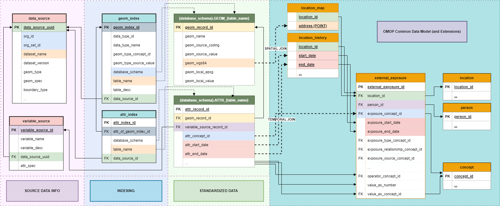

OHDSI GIS
OHDSI GIS  OHDSI GIS
WG
OHDSI GIS
WG
OMOP GIS Schema Extensions

Overview
The OMOP GIS Vocabulary Package extends the OMOP Common Data Model (CDM) to support geospatially-linked health determinants and environmental exposures. This extension is anchored by the external_exposure table, which serves as the foundational structure enabling integration of spatial, environmental, and sociodemographic data into observational health research workflows.
location_history
Access DDL scripts here
Table Description
This table is a copy of the OMOP Location_History table.
User Guide
Copy the OMOP Location_History table to Gaia to facilitate creation of CDM Extension tables
ETL Conventions
This table should be an exact duplicate of the OMOP Location_History table.
| Gaia Field | User Guide | ETL Conventions | Datatype | Required | Primary Key | Foreign Key | FK Table | FK Domain |
|---|---|---|---|---|---|---|---|---|
| location_id | integer | Yes | No | Yes | location | |||
| relationship_type_concept_id | integer | Yes | No | Yes | concept | |||
| domain_id | integer | Yes | No | No | ||||
| entity_id | integer | Yes | No | No | ||||
| start_date | date | Yes | No | No | ||||
| end_date | date | No | No | No |
external_exposure
Access DDL scripts here
Table Description
This CDM Extension table is used to represent person-related transformations of data from Gaia and to interface with ATLAS and OHDSI tool stack from an OMOP CDM database.
| Gaia Field | User Guide | ETL Conventions | Datatype | Required | Primary Key | Foreign Key | FK Table | FK Domain |
|---|---|---|---|---|---|---|---|---|
| external_exposure_id | The unique key given to a social or environmental exposure for a Person | Each derived instance of an exposure should be assigned this unique key. | integer | Yes | Yes | No | ||
| location_id | The LOCATION_ID of the Person for whom the exposure is associated. | integer | Yes | No | Yes | location | ||
| person_id | The PERSON_ID of the Person for whom the exposure is associated. | integer | Yes | No | Yes | person | ||
| exposure_concept_id | The EXPOSURE_CONCEPT_ID field is recommended for primary use in analyses, and must be used for network studies. This is the standard concept mapped from the source value which represents a exposure. | The CONCEPT_ID to which the source exposure is mapped. This mapping should be integrated into the variable_source record and automatically populated in this record. | integer | Yes | No | Yes | concept | |
| exposure_start_date | Use this date to determine the start date of the exposure. | The date range of the exposure should represent the temporal overlap between the place-based exposure data point and the LOCATION_ID’s location_history record. | date | Yes | No | No | ||
| exposure_start_datetime | datetime | No | No | No | ||||
| exposure_end_date | Use this date to determine the end date of the exposure. | The date range of the exposure should represent the temporal overlap between the place-based exposure data point and the LOCATION_ID’s location_history record. | date | Yes | No | No | ||
| exposure_end_datetime | datetime | No | No | No | ||||
| exposure_type_concept_id | This field identifies the origin of the exposure record (e.g. Census, EHR, Environmental data, Geospatial data, Satellite imagery, GIS mapping, Sensor network, Mobile device geolocation, LiDAR) | The CONCEPT_ID to which the exposure’s data source type is mapped. This mapping should be integrated into the data_source record and automatically populated in this record. | integer | Yes | No | Yes | concept | Type Concept |
| exposure_relationship_concept_id | This field can be used to determine the spatiotemporal relationship between the source Exposure and the Person | The CONCEPT_ID to which the relationship between the Exposure and the Person is mapped. This mapping should be automatically populated in this record. | integer | Yes | No | Yes | concept | |
| exposure_source_concept_id | This field can be used to determine the original source of place-based exposure data | The CONCEPT_ID to which the exposure’s data source is mapped. This mapping should be integrated into the data_source record and automatically populated in this record. | integer | No | No | Yes | concept | |
| exposure_source_value | This field houses the verbatim name of the original source of place-based exposure data. | This name is mapped to a Standard Exposure Source Concept and the original name is stored here for reference. | varchar(50) | No | No | No | ||
| exposure_relationship_source_value | varchar(50) | No | No | No | ||||
| dose_unit_source_value | varchar(50) | No | No | No | ||||
| quantity | integer | No | No | No | ||||
| modifier_source_value | varchar(50) | No | No | No | ||||
| operator_concept_id | The meaning of Concept?4172703?for ?=? is identical to omission of a OPERATOR_CONCEPT_ID value. Since the use of this field is rare, it?s important when devising analyses to not to forget testing for the content of this field for values different from =. | integer | No | No | Yes | concept | ||
| value_as_number | This is the numerical value of the Exposure, if available. | This value should be integrated into the variable_source record and automatically populated in this record. | float | No | No | No | ||
| value_as_concept_id | If the raw data gives a categorial result for exposures those values are captured and mapped to standard concepts in the ?Exposure Value? domain. | This mapping should be integrated into the variable_source record and automatically populated in this record. | integer | No | No | Yes | concept | |
| unit_concept_id | UNIT_SOURCE_VALUES should be mapped to a Standard Concept in the Unit domain that best represents the unit as given in the source data. | This mapping should be integrated into the variable_source record and automatically populated in this record. | integer | No | No | Yes | concept | Unit |
The OMOP GIS Vocabulary Package extends the OMOP Common Data Model (CDM) to support geospatially-linked health determinants and environmental exposures. This extension is anchored by the external_exposure table, which serves as the foundational structure enabling integration of spatial, environmental, and sociodemographic data into observational health research workflows.
6.1. The external_exposure Table
The external_exposure table is the central data
structure that connects patient-level health data to environmental,
geographic, and social determinants captured through the GIS vocabulary.
All other components of the GIS extension—vocabularies, mappings,
hierarchies, and relationships—depend on this table’s definition and
implementation.
6.1.1. Purpose and Scope
The external_exposure table enables:
- Linkage of environmental exposures to persons via standardized location identifiers
- Temporal alignment of exposure periods with clinical observation periods
- Standardized representation of exposure types, intensities, and measurement units
- Integration with OMOP analytic tools for cohort construction and outcome assessment
- Support for multi-domain exposures including air quality, noise pollution, socioeconomic indices, and built environment characteristics
6.1.2. Current Definition
The foundational schema for external_exposure has been
developed through collaboration within the GIS Working Group. This
initial definition represents the first OMOP CDM MVP
for geospatial health determinants.
Key Fields:
| Field Name | Type | Description |
|---|---|---|
exposure_occurrence_id |
Integer | Unique identifier for each exposure record |
person_id |
Integer | Foreign key to PERSON table |
location_id |
Integer | Foreign key to LOCATION table, indicating where exposure occurred |
exposure_concept_id |
Integer | Standard concept representing the type of exposure (from GIS vocabularies) |
exposure_start_date |
Date | Date when the exposure event started |
exposure_end_date |
Date | Date when the exposure event ended (NULL if ongoing) |
exposure_type_concept_id |
Integer | Concept defining the origin of the exposure record |
value_as_number |
Float | Numerical value of the exposure (e.g., concentration, index score) |
value_as_concept_id |
Integer | Concept for categorical exposure values |
unit_concept_id |
Integer | Concept representing the measurement unit |
operator_concept_id |
Integer | Concept defining operator logic (e.g., <, >, =) |
quantity |
Integer | Number of exposure occurrences (if applicable) |
exposure_source_value |
String | Raw exposure value from source data |
exposure_source_concept_id |
Integer | Source-specific concept before standardization |
Note: This schema is subject to refinement through community feedback and use case validation. Implementers should consult the latest OMOP CDM specifications and GIS Working Group discussions.
6.1.3. Design Principles
The external_exposure table design prioritizes:
- CDM Conformance: Aligns with OMOP architectural patterns and naming conventions
- Semantic Precision: Uses standardized concept IDs from GIS vocabularies to ensure interoperability
- Temporal Granularity: Supports both point-in-time and interval-based exposure assessments
- Spatial Linkage: Leverages LOCATION table to enable geographic joins and spatial analyses
- Extensibility: Accommodates diverse exposure types without requiring schema modifications
6.2. Auxiliary Tables and Extensions
While the initial external_exposure definition provides
a foundational structure, auxiliary tables may be
developed to support specific analytical needs and temporal modeling
requirements.
6.2.1. Proposed Auxiliary Structures
Future CDM extensions may include:
- exposure_time_series: Captures temporally-ordered exposure sequences for longitudinal analysis
- exposure_aggregation: Stores pre-computed exposure summaries at various spatial and temporal granularities
- location_exposure_profile: Links locations to characteristic exposure patterns and risk indices
- exposure_co_occurrence: Tracks concurrent exposures to multiple environmental factors
6.2.2. Use Case-Driven Development
The development of auxiliary tables will be guided by specific research use cases, ensuring that extensions address real-world analytical requirements rather than speculative needs. Each proposed auxiliary table should:
- Reference a validated use case from the Use Cases Inventory (Section 7)
- Demonstrate analytical necessity beyond what
external_exposurecan support - Maintain CDM conformance and avoid duplication of existing OMOP structures
- Include example implementations with sample data and ETL logic
6.3. MVP Roadmap
The OMOP GIS CDM extension follows a Minimum Viable Product (MVP) approach, enabling iterative development aligned with community needs and validation outcomes.
6.3.1. MVP 1: Core external_exposure Table
Status: Initial definition complete Scope: Basic exposure linkage with person, location, and temporal attributes Validation: Section 5 (Validation) describes usability testing with real-world datasets Next Steps: Community review, pilot implementations, refinement based on feedback
6.3.2. Future MVPs
Subsequent MVPs will be use case-driven, with each iteration addressing specific analytical requirements identified by GIS Working Group members and broader OHDSI community stakeholders.
Potential Future MVPs:
- MVP 2: Time-series exposure modeling (supporting longitudinal environmental epidemiology)
- MVP 3: Multi-level spatial aggregation (supporting neighborhood-level and regional analyses)
- MVP 4: Co-exposure network modeling (supporting exposome research)
- MVP 5: Historical exposure reconstruction (supporting life-course epidemiology)
Each MVP will be documented with: - Motivating use case(s) - Schema definitions (DDL and data dictionary) - Example ETL workflows - Validation criteria and test datasets - Integration guidance for existing OMOP implementations
6.4. Relationship to GIS Vocabularies
All CDM extensions depend on the GIS Vocabulary Package to ensure semantic standardization:
- exposure_concept_id values come from OMOP GIS, OMOP SDOH, and OMOP Exposome vocabularies
- Hierarchical relationships enable aggregation across exposure categories (e.g., all air quality metrics)
- Mapping relationships connect source-specific exposure codes to OMOP standard concepts
- Custom relationships (e.g., “Has geometry”, “Locates in tissue”) support domain-specific reasoning
This bidirectional dependency ensures that: - Vocabulary development is informed by practical CDM implementation needs - CDM schema evolution drives vocabulary enrichment and refinement - Use cases validate both vocabulary coverage and table design adequacy
6.5. Implementation Considerations
6.5.1. Spatial Identifier Management
Effective use of external_exposure requires: -
Consistent location coding using standardized
identifiers (GEOID, ZIP, lat/lon) - Geocoding workflows
to assign location_id values to persons - Temporal location
tracking if persons move between observation periods
6.5.2. Data Integration Patterns
Common ETL patterns include: - Batch loading of exposure datasets (e.g., annual EPA air quality data) - Spatial joins between person locations and environmental monitoring data - Temporal interpolation when exposure measurements are sparse or interval-based
6.5.3. Performance Optimization
For large-scale implementations: - Index location_id and exposure_start_date for efficient temporal queries - Partition by year or region to improve query performance - Pre-aggregate common exposure metrics to reduce computational overhead
6.6. Governance and Versioning
CDM extensions are managed through OHDSI governance processes:
- Proposals are submitted to the GIS Working Group for review
- Community feedback is collected through GitHub discussions and WG meetings
- Validation is conducted through pilot implementations and use case testing
- Versioning follows OMOP CDM release cycles (e.g., CDM v6.1 + GIS Extension v1.0)
For the latest schema definitions, implementation guidance, and community discussions, see: - OHDSI GIS Working Group - OMOP CDM GitHub - GIS Vocabulary Package